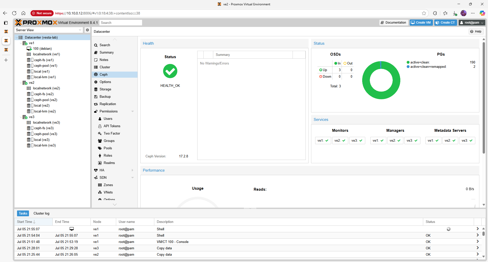
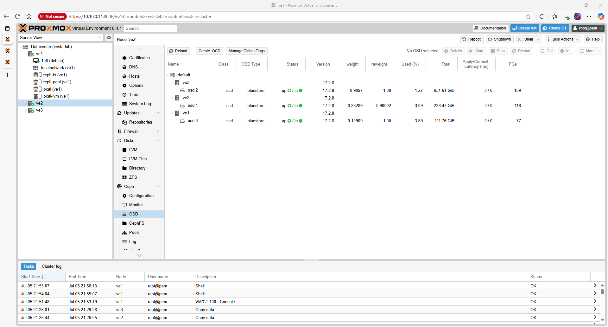
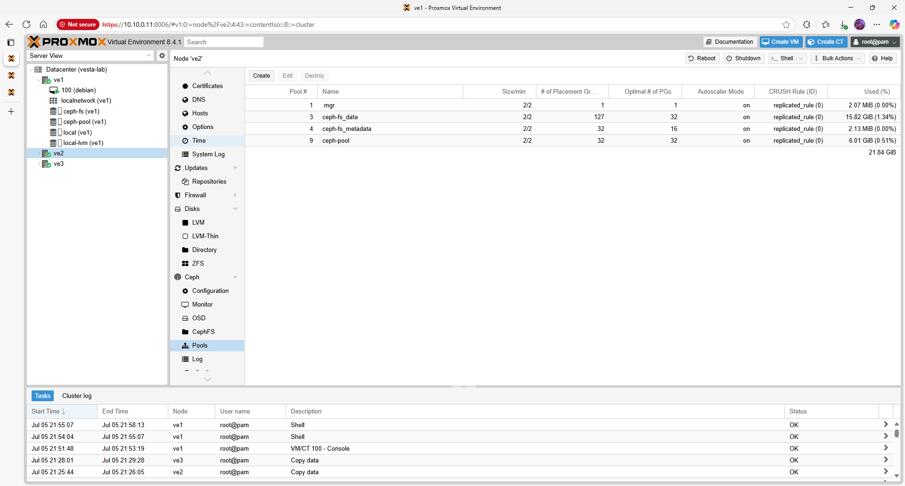
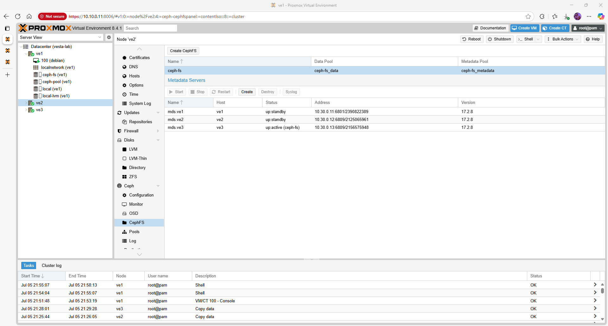

Proxmox VE 8.4.1 – Ceph Storage
Ceph provides scalable, fault‑tolerant storage for VMs and containers. This guide walks through installing Ceph on a three‑node Proxmox cluster, creating OSDs and pools, and adding CephFS for ISO/template storage.
Quick‑view topology / matrix
| Node | Cluster VLAN (10.30.0.0/24) | Disks for OSDs | Notes |
|---|---|---|---|
| ve1 | 10.30.0.2 | /dev/sda (ssd) |
System disk separate |
| ve2 | 10.30.0.3 | /dev/nvme0n1 (ssd) |
— |
| ve3 | 10.30.0.4 | /dev/sda (hdd) |
Lower performance |
Prerequisites
- A healthy Proxmox cluster with quorum (see Cluster Setup).
- At least one unused disk per node dedicated for Ceph OSDs. All existing partitions on these disks will be destroyed.
- Sufficient network bandwidth on VLAN 30 for replication traffic. Using jumbo frames (MTU 9000) is recommended.
Step 1 – Install Ceph Packages
Install Ceph on every node using the no‑subscription repository:
pveceph install --repository no-subscription
This downloads and installs the Ceph quincy or reef packages from Proxmox repositories. Confirm success by running ceph --version.
Step 2 – Initialise the Ceph Cluster
Run the initialization once on ve1, specifying the cluster network (VLAN 30):
pveceph init --network 10.30.0.0/24
Then create the Monitor and Manager daemons on each node:
pveceph mon create
pveceph mgr create
In the web GUI, you will see the new monitors and managers appear under Datacenter → Ceph.

Step 3 – Create OSDs
Prepare and assign disks to Ceph. The table above lists one disk per node; adjust as needed. For each disk run the following commands on the appropriate node:
sgdisk --zap-all /dev/sda # remove existing partition table
wipefs -a /dev/sda # erase filesystem signatures
pveceph osd create /dev/sda --crush-device-class ssd
Replace /dev/sda with the correct device (e.g. /dev/nvme0n1 or /dev/sdb). This command prepares the disk, adds it to the CRUSH map with the ssd or hdd class and starts the OSD daemon.

Step 4 – Create Pools
Create at least one pool for virtual machine disks and another for backups. For example:
pveceph pool create ceph-pool --application rbd
ceph osd pool set ceph-pool size 2
The size parameter determines the replication level. A value of 2 means each block is stored on two different OSDs; increase to 3 for higher durability (requires at least three OSDs).

Step 5 – Add CephFS for ISO and Templates
To store ISO files and container templates centrally, create a CephFS volume:
pveceph fs create cephfs --data-pool cephfs_data --metadata-pool cephfs_metadata
Then mount the filesystem in Proxmox by adding a storage entry. Replace the monitor IPs with your cluster nodes:
pvesm add ceph-fs cephfs-store \
--monhost 10.30.0.2 10.30.0.3 10.30.0.4 \
--content iso,vztmpl,backup \
--mountpoint /mnt/pve/ceph-fs
After running the command, verify the new storage appears in the web GUI under Datacenter → Storage.

Step 6 – Validate the Setup
Check overall Ceph health and storage status:
ceph -s
pvesm status
The ceph -s output should indicate HEALTH_OK. The pvesm status command lists the new RBD and CephFS stores as available.
Troubleshooting
Refer to the Ceph Troubleshooting page for solutions to common warnings (e.g. 401 Unauthorized during installation, disks already in use or PG counts).
Next steps / Links
Once storage is in place, enable automated failover by following the High Availability guide. Consult the official Proxmox Ceph documentation for detailed tuning and capacity planning [✔ verified https://www.virtualizationhowto.com/2022/08/proxmox-update-no-subscription-repository-configuration/].